改造单细胞降维图| 1.DimPlot的探索
原文：https://mp.weixin.qq.com/s?__biz=MzAwMzIzOTk5OQ==&mid=2247496162&idx=1&sn=598c2920f7cc0697ee5a1fa6cadaee04&chksm=9b3c88b2ac4b01a415feeebbbec6c4891319439dc8dcdafd33cca7a1222e5adc723ae9d3a73d#rd 合集：单细胞教程全收录

写在前面
 随着我们课程的持续深入，以及各位小伙伴分析技能的日益提升，目前很多同学已经不满足于Seurat的可视化功能并希望能够做出一些改进的可视化 。我个人对可视化的方式改进其实并不感冒，画图嘛，跟翻译一样信达雅 即可，没必要盲目追求视觉效果。不过这也并不方案我给大家做这类的教程。我们准备出一系列单细胞测图片改造计划 的推送，大家如果有任何关于可视化的想法，也可以通过文末客服微信联系我们。
第一个系列就是对降维图的改造，这次的推送我们先和大家一起回顾一下"Seurat::DimPlot"的内容，也许你需要的功能早已被作者纳入囊中。下一次教程我们将会和大家一起在ggplot2中完成一些探索。
随着我们课程的持续深入，以及各位小伙伴分析技能的日益提升，目前很多同学已经不满足于Seurat的可视化功能并希望能够做出一些改进的可视化 。我个人对可视化的方式改进其实并不感冒，画图嘛，跟翻译一样信达雅 即可，没必要盲目追求视觉效果。不过这也并不方案我给大家做这类的教程。我们准备出一系列单细胞测图片改造计划 的推送，大家如果有任何关于可视化的想法，也可以通过文末客服微信联系我们。
第一个系列就是对降维图的改造，这次的推送我们先和大家一起回顾一下"Seurat::DimPlot"的内容，也许你需要的功能早已被作者纳入囊中。下一次教程我们将会和大家一起在ggplot2中完成一些探索。
视频教程
B站同步播出，连播更方便，文末阅读原文可直达：https://www.bilibili.com/video/BV1S44y1b76Z?p=11
图文教程
二、准备工作
1.1 预处理
#依赖的包比较多，并且很多也比较难装，装的时候需要有点耐心
if(!require(GEOquery))BiocManager::install('GEOquery')
## Loading required package: GEOquery
## Loading required package: Biobase
## Loading required package: BiocGenerics
##
## Attaching package: 'BiocGenerics'
## The following objects are masked from 'package:stats':
##
## IQR, mad, sd, var, xtabs
## The following objects are masked from 'package:base':
##
## anyDuplicated, append, as.data.frame, basename, cbind, colnames,
## dirname, do.call, duplicated, eval, evalq, Filter, Find, get, grep,
## grepl, intersect, is.unsorted, lapply, Map, mapply, match, mget,
## order, paste, pmax, pmax.int, pmin, pmin.int, Position, rank,
## rbind, Reduce, rownames, sapply, setdiff, sort, table, tapply,
## union, unique, unsplit, which.max, which.min
## Welcome to Bioconductor
##
## Vignettes contain introductory material; view with
## 'browseVignettes()'. To cite Bioconductor, see
## 'citation("Biobase")', and for packages 'citation("pkgname")'.
## Setting options('download.file.method.GEOquery'='auto')
## Setting options('GEOquery.inmemory.gpl'=FALSE)
if(!require(GEOquery))install.packages('Seurat')
#建议安装的时候选1，依赖的包都装上
用GEOquery下载总是出权限问题，大家可以自行在GEO中下载GSE139107。我提供的测试数据中也有计算好的数据，下面这个代码框的运行大约要花费20GB的内存，建议从第二个代码框直接读取。
#加载包和数据
library(plot1cell)
#getGEOSuppFiles(GEO = "GSE139107")
# setwd("GSE139107/")
setwd("GSE139107/")
all_files <- list.files(pattern = "dge")
all_ct <- list()
for (i in 1:length(all_files)) {
ct_data <- read.delim(all_files[i])
ct_data <- Matrix(as.matrix(ct_data), sparse = T)
all_ct[[i]] <- ct_data
print(all_files[i])
}
all.count <- RowMergeSparseMatrices(all_ct[[1]], all_ct[-1])
meta.data <- read.delim("GSE139107_MouseIRI.metadata.txt.gz")
all.count <- all.count[, rownames(meta.data)]
iri <- CreateSeuratObject(counts = all.count, min.cells = 0,
min.features = 0, meta.data = meta.data)
makecore <- function(workcore,memory){
if(!require(Seurat))install.packages('Seurat')
if(!require(future))install.packages('future')
plan("multiprocess", workers = workcore)
options(future.globals.maxSize= memory*1024*1024**2)
}
makecore(4,5)
iri.list <- SplitObject(iri, split.by = "orig.ident")
iri.list <- lapply(X = iri.list, FUN = function(x) {
x <- NormalizeData(x, verbose = FALSE)
x <- FindVariableFeatures(x, verbose = FALSE)
})
features <- SelectIntegrationFeatures(object.list = iri.list)
iri.list <- lapply(X = iri.list, FUN = function(x) {
x <- ScaleData(x, features = features, verbose = FALSE)
x <- RunPCA(x, features = features, verbose = FALSE)
})
anchors <- FindIntegrationAnchors(object.list = iri.list,
reference = c(1, 2), reduction = "rpca", dims = 1:50)
iri.integrated <- IntegrateData(anchorset = anchors, dims = 1:50)
iri.integrated <- ScaleData(iri.integrated, verbose = FALSE)
iri.integrated <- RunPCA(iri.integrated, verbose = FALSE)
iri.integrated <- RunUMAP(iri.integrated, dims = 1:25, min.dist = 0.2)
iri.integrated <- RunTSNE(iri.integrated, dims = 1:25, min.dist = 0.2)
iri.integrated <- SetIdent(iri.integrated, value = "celltype")
levels(iri.integrated) <- c("PTS1", "PTS2", "PTS3",
"NewPT1", "NewPT2", "DTL-ATL", "MTAL",
"CTAL1", "CTAL2", "MD", "DCT",
"DCT-CNT", "CNT", "PC1", "PC2",
"ICA", "ICB", "Uro", "Pod", "PEC",
"EC1", "EC2", "Fib", "Per", "Mø",
"Tcell")
levels(iri.integrated@meta.data$Group) <- c("Control",
"4hours", "12hours", "2days", "14days",
"6weeks")
DefaultAssay(iri.integrated) <- "RNA"
setwd("../")
saveRDS(iri.integrated,'iri.intergrate.rds')
1.2 数据基本情况
#大家可以跳过上面预处理的步骤直接读取
library(Seurat)
## Attaching SeuratObject
scRNA <- readRDS('iri.intergrate.rds')
ncol(scRNA)#细胞数量很多
## [1] 126578
names(scRNA@meta.data)
## [1] "orig.ident" "nCount_RNA" "nFeature_RNA" "Group" "Replicates"
## [6] "celltype"
DimPlot(scRNA)
## Rasterizing points since number of points exceeds 100,000.
## To disable this behavior set `raster=FALSE`
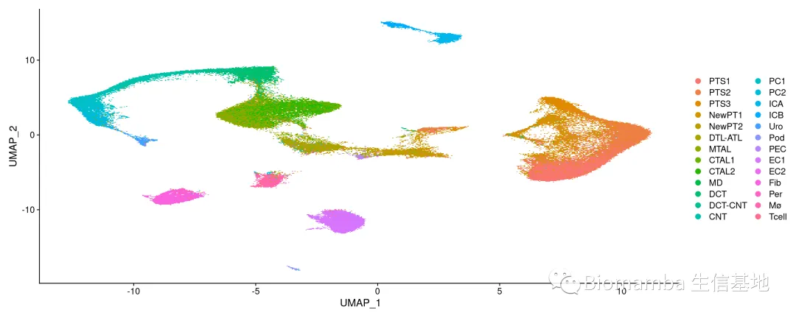
DimPlot(scRNA,split.by = 'Group')#可以看到组别比较多
## Rasterizing points since number of points exceeds 100,000.
## To disable this behavior set `raster=FALSE`
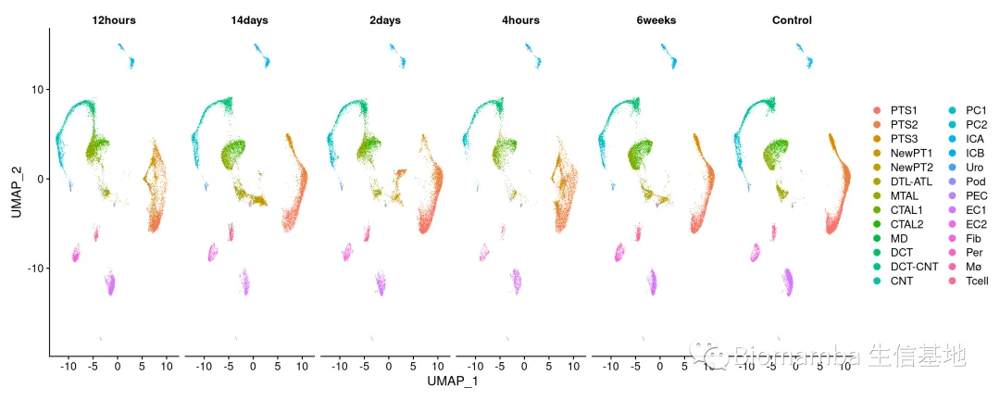
DimPlot(scRNA,split.by = 'Replicates')
## Rasterizing points since number of points exceeds 100,000.
## To disable this behavior set `raster=FALSE`
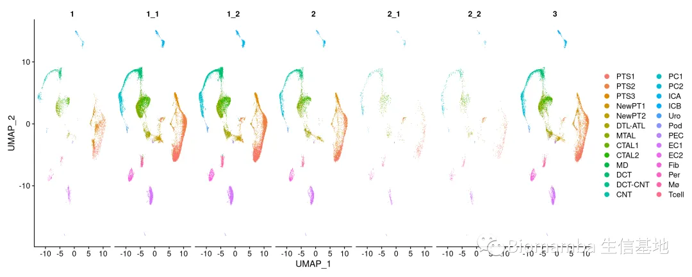
#细胞数量太多不方便演示，做个抽样
Idents(scRNA) <- 'Group' #设置active idents
scRNA <- subset(scRNA, downsample = 1000)#每个'Group'中随机抽取一千个细胞
Idents(scRNA) <- 'celltype'
ncol(scRNA)
## [1] 6000
三、对Seurat::DimPlot的探索
在我们利用一些扩展包对降维图进行改造之前，我们可以先来回顾一下Seurat中的DimPlot，随着版本的更新，其功能越来越强大，也许有许多你未曾使用过参数，而它们可能已经能满足你的改造需求。
2.1.DimPlot的完整参数
#?DimPlot
# DimPlot {Seurat} R Documentation
# Dimensional reduction plot
# Description
# Graphs the output of a dimensional reduction technique on a 2D scatter plot where each point is a cell and it's positioned based on the cell embeddings determined by the reduction technique. By default, cells are colored by their identity class (can be changed with the group.by parameter).
#
# Usage
# DimPlot(
# object,
# dims = c(1, 2),
# cells = NULL,
# cols = NULL,
# pt.size = NULL,
# reduction = NULL,
# group.by = NULL,
# split.by = NULL,
# shape.by = NULL,
# order = NULL,
# shuffle = FALSE,
# seed = 1,
# label = FALSE,
# label.size = 4,
# label.color = "black",
# label.box = FALSE,
# repel = FALSE,
# cells.highlight = NULL,
# cols.highlight = "#DE2D26",
# sizes.highlight = 1,
# na.value = "grey50",
# ncol = NULL,
# combine = TRUE,
# raster = NULL,
# raster.dpi = c(512, 512)
# )
#
# PCAPlot(object, ...)
#
# TSNEPlot(object, ...)
#
# UMAPPlot(object, ...)
# Arguments
# object
# Seurat object
#
# dims
# Dimensions to plot, must be a two-length numeric vector specifying x- and y-dimensions
#
# cells
# Vector of cells to plot (default is all cells)
#
# cols
# Vector of colors, each color corresponds to an identity class. This may also be a single character or numeric value corresponding to a palette as specified by brewer.pal.info. By default, ggplot2 assigns colors. We also include a number of palettes from the pals package. See DiscretePalette for details.
#
# pt.size
# Adjust point size for plotting
#
# reduction
# Which dimensionality reduction to use. If not specified, first searches for umap, then tsne, then pca
#
# group.by
# Name of one or more metadata columns to group (color) cells by (for example, orig.ident); pass 'ident' to group by identity class
#
# split.by
# Name of a metadata column to split plot by; see FetchData for more details
#
# shape.by
# If NULL, all points are circles (default). You can specify any cell attribute (that can be pulled with FetchData) allowing for both different colors and different shapes on cells. Only applicable if raster = FALSE.
#
# order
# Specify the order of plotting for the idents. This can be useful for crowded plots if points of interest are being buried. Provide either a full list of valid idents or a subset to be plotted last (on top)
#
# shuffle
# Whether to randomly shuffle the order of points. This can be useful for crowded plots if points of interest are being buried. (default is FALSE)
#
# seed
# Sets the seed if randomly shuffling the order of points.
#
# label
# Whether to label the clusters
#
# label.size
# Sets size of labels
#
# label.color
# Sets the color of the label text
#
# label.box
# Whether to put a box around the label text (geom_text vs geom_label)
#
# repel
# Repel labels
#
# cells.highlight
# A list of character or numeric vectors of cells to highlight. If only one group of cells desired, can simply pass a vector instead of a list. If set, colors selected cells to the color(s) in cols.highlight and other cells black (white if dark.theme = TRUE); will also resize to the size(s) passed to sizes.highlight
#
# cols.highlight
# A vector of colors to highlight the cells as; will repeat to the length groups in cells.highlight
#
# sizes.highlight
# Size of highlighted cells; will repeat to the length groups in cells.highlight
#
# na.value
# Color value for NA points when using custom scale
#
# ncol
# Number of columns for display when combining plots
#
# combine
# Combine plots into a single patchworked ggplot object. If FALSE, return a list of ggplot objects
#
# raster
# Convert points to raster format, default is NULL which automatically rasterizes if plotting more than 100,000 cells
#
# raster.dpi
# Pixel resolution for rasterized plots, passed to geom_scattermore(). Default is c(512, 512).
#
# ...
# Extra parameters passed to DimPlot
#
# Value
# A patchworked ggplot object if combine = TRUE; otherwise, a list of ggplot objects
#
# Note
# For the old do.hover and do.identify functionality, please see HoverLocator and CellSelector, respectively.
#
# See Also
# FeaturePlot HoverLocator CellSelector FetchData
#
# Examples
# Run examples
#
# data("pbmc_small")
# DimPlot(object = pbmc_small)
# DimPlot(object = pbmc_small, split.by = 'ident')
2.2.调整DimPlot参数
其实DimPlot中还有很多参数可以调整，用好这些参数也可以对降维图改造一番：
2.2.1 cols
这个参数主要用于调整各分类变量的颜色
ggsci的使用可以参考：自此配色烦恼不相逢——ggsci
library(ggsci)
mycol <- c(pal_d3()(7),pal_aaas()(7),pal_uchicago()(7),pal_jama()(7))
DimPlot(scRNA)|#ggplot2的默认配色
DimPlot(scRNA,cols = mycol)#ggsci中的一些配色
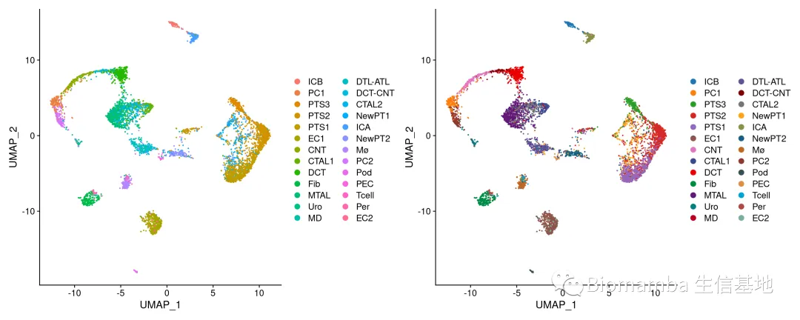
2.2.2 pt.size
#设置的极端一些让大家看看效果，大家可以自行调整至舒适的大小
DimPlot(scRNA,pt.size = 0.01)|DimPlot(scRNA,pt.size = 1)
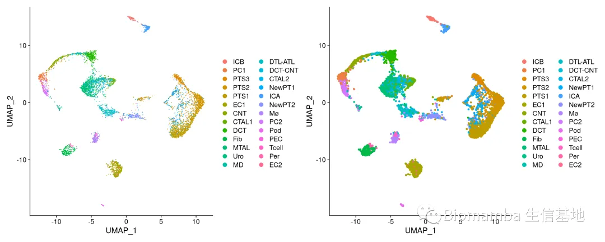
2.2.3 reduction
这个参数也比较简单，即选择降维方式
DimPlot(scRNA,reduction = 'umap')|
DimPlot(scRNA,reduction = 'tsne')|
DimPlot(scRNA,reduction = 'pca')
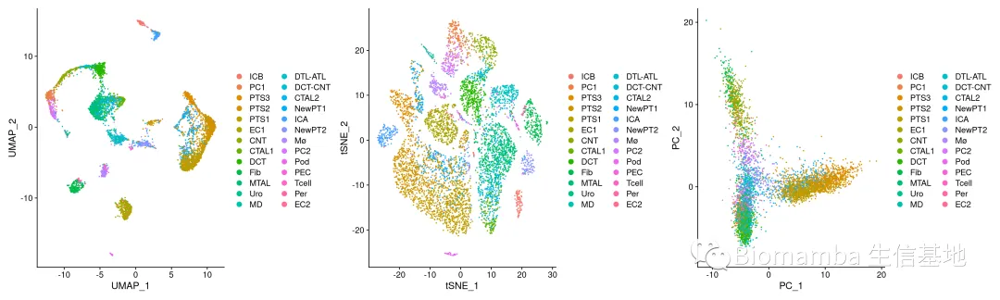
#显然PCA是不利于做细胞类型的展示的
2.2.4 label相关
label:是否显示标签
DimPlot(scRNA,label = F)|DimPlot(scRNA,label = T)
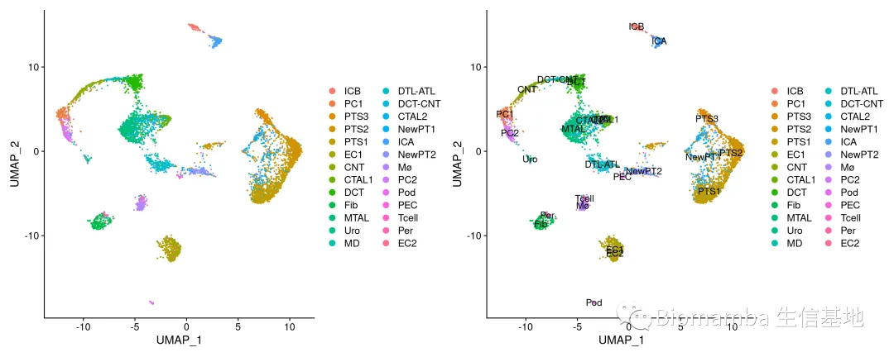
#有点花，我们就挑细胞数量最多的五种细胞类型做展示：
suppressMessages(library(dplyr))
mycelltype <- table(Idents(scRNA)) %>%sort(decreasing = T) %>% names(.) %>% .[c(1:5)*2]
mycelltype#抽出五种细胞
## [1] "PTS1" "EC1" "DCT" "PTS3" "Fib"
scRNA <- subset(scRNA,idents=mycelltype)
DimPlot(scRNA,label = F)|DimPlot(scRNA,label = T)
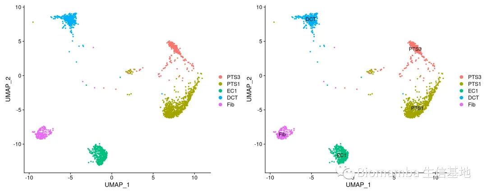
label.size:在labe=T时调整标签大小:
#一样选的比较极端，大家可以自行调整
DimPlot(scRNA,label = T,label.size = 0.5)|
DimPlot(scRNA,label = T,label.size = 5)
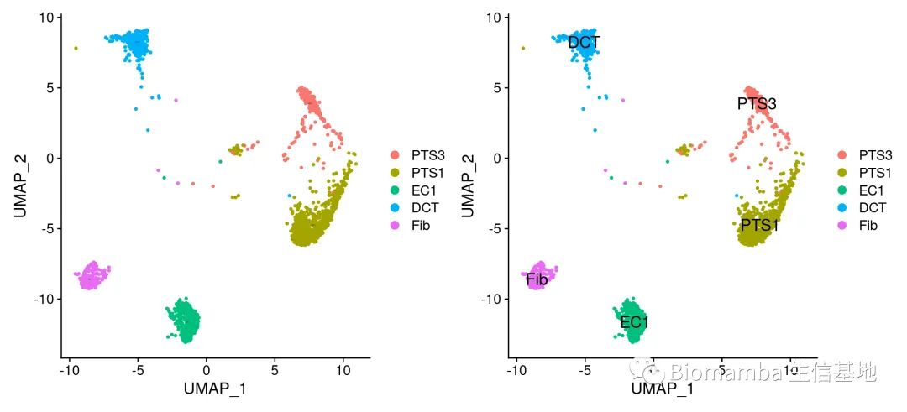
label.box:在labe=T时给label加上一个边框
#一样选的比较极端，大家可以自行调整
DimPlot(scRNA,label = T,label.box = T)|#缺点就是会挡住后面的点
DimPlot(scRNA,label = T,label.box = F)
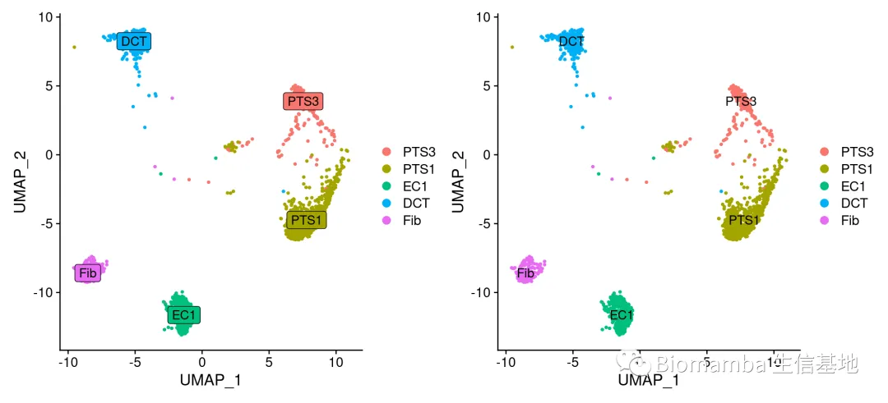
repel:把label放在细胞的一侧，这样可以拯救一下遮住的点
DimPlot(scRNA,label = T,label.box = T,repel = T)|DimPlot(scRNA,label = T,label.box = T,repel = F)
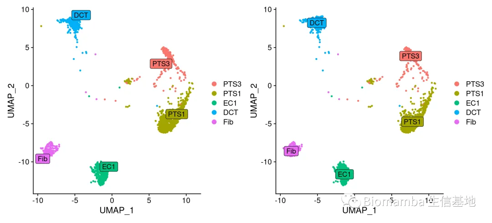
2.2.5 highlight相关
cells.highlight:选择想要高亮的细胞，这里输入的是一个包含细胞barcode 名称的list
DimPlot(scRNA,label = T)|
DimPlot(scRNA,label = T,cells.highlight = c('PTS2','PTS1'))|#这行是个错误示范
DimPlot(scRNA,label = T,cells.highlight = list(PTC1and2=colnames(scRNA)[scRNA$celltype %in% c('PTS2','PTS1')]))
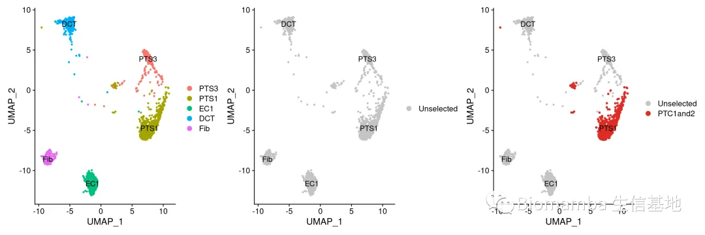
sizes.highlight:被高亮的细胞可以如是调整点的大小：
DimPlot(scRNA,label = T)|
DimPlot(scRNA,label = T,cells.highlight = list(PTC1and2=colnames(scRNA)[scRNA$celltype %in% c('PTS2','PTS1')]),sizes.highlight=1)|
DimPlot(scRNA,label = T,cells.highlight = list(PTC1and2=colnames(scRNA)[scRNA$celltype %in% c('PTS2','PTS1')]),sizes.highlight=2)
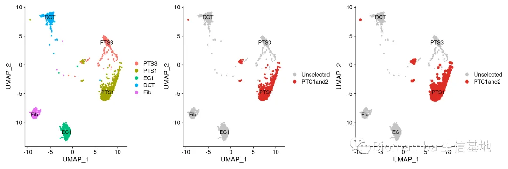
2.2.6 raster是否栅格化
及把矢量图像素化
DimPlot(scRNA,raster = F)|DimPlot(scRNA,raster = T)
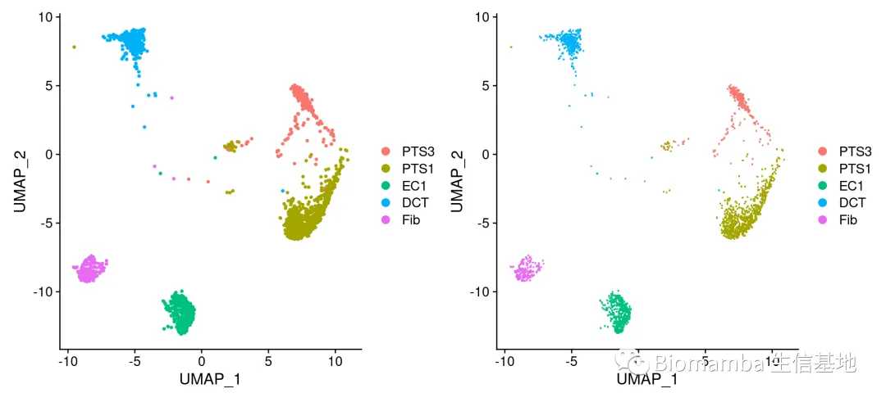
#这里由于像元尺寸小于点的大小，因此点的看起来点变方了
#我们把这两张图分别存出来
pdf(file = 'p1.pdf')
DimPlot(scRNA,raster = F)
dev.off()
## png
## 2
pdf(file = 'p2.pdf')
DimPlot(scRNA,raster = T)
dev.off()
## png
## 2
#可以看出，栅格化以后会节省图片文件存储空间的大小
file.size('p1.pdf')
## [1] 120020
file.size('p2.pdf')
## [1] 16020
reaster.dpi:设定栅格化的分辨率
#分辨率选的越低，图片就会越糊：
DimPlot(scRNA,raster = T, raster.dpi = c(512, 512))|
DimPlot(scRNA,raster = T,raster.dpi = c(200, 200))
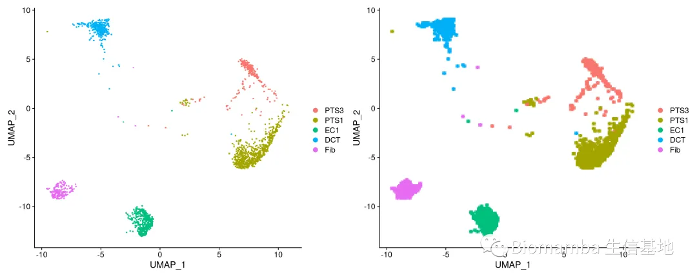
代码及测试文件
不要再说我的链接失效啦，我也不知道为啥腾讯和百度云不对付，微信页面或腾讯浏览器时常打不开百度云链接，链接最好在谷歌浏览器中打开或扫码打开 ，真的失效了再提醒客服更换链接哦。也不要说我的链接里没代码，html格式的文件大家用浏览器打开就可以看到整理好的笔记：
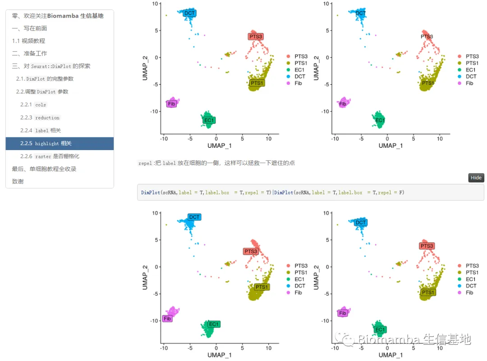
链接：
链接：https://pan.baidu.com/s/1DRDOEgtq1YrEJWQCz2vsOQ?pwd=sxxv
若链接失效可以文末联系客服领取~
单细胞系列教程目录
单细胞数据分析系列教程：
B站视频，先看一遍视频再去看推送操作，建议至少看三遍：https://www.bilibili.com/video/BV1S44y1b76Z/以下的资料都可以在这里订阅：单细胞数据基础分析学习手册
单细胞测序基础数据分析保姆级教程，代码部分整理在往期推送之中：手把手教你做单细胞测序数据分析（一）——绪论 手把手教你做单细胞测序数据分析（二）——各类输入文件读取 手把手教你做单细胞测序数据分析（三）——单样本分析 手把手教你做单细胞测序数据分析（四）——多样本整合手把手教你做单细胞测序数据分析（五）——细胞类型注释 手把手教你做单细胞测序数据分析（六）——组间差异分析及可视化手把手教你做单细胞测序数据分析（七）——基因集富集分析
上游fastq文件处理： 单细胞分析的最上游——处理Fastq文件：cellranger 单细胞分析的最上游——处理Fastq文件：dropseqRunner有奖提问,这个smart-Seq2数据实战的比对率为何如此低？
细胞通讯B站连续播放起来比较方便： https://www.bilibili.com/video/BV1Ab4y1W7qx?p=1往期推送单细胞测序数据进阶分析—《细胞通讯》1.概论 单细胞测序数据进阶分析—《细胞通讯》2.1CellChat基础分析教程 单细胞测序数据进阶分析—《细胞通讯》2.2CellChat多组别分析 给你们申请到了免费的128GB云服务器 拟时序分析B站连续播放起来比较方便： https://www.bilibili.com/video/BV1br4y1x7Hf?p=1往期推送单细胞测序数据进阶分析—《拟时序分析》1.概论 单细胞测序数据进阶分析—《拟时序分析》2.monocle概论单细胞测序数据进阶分析—《拟时序分析》3.monocle2实操：完整版 单细胞测序数据进阶分析—《拟时序分析》4.初识monocle3 单细胞测序数据进阶分析—《拟时序分析》5.monocle3的降维、分群、聚类单细胞测序数据进阶分析—《拟时序分析》6.monocle3的拟时序分析 解决monocle2的orderCells报错的两种方法 一文搞定拟时序分析的下游可视化探索
其他单细胞相关技术贴也在这里：细胞的数量由誰决定？单细胞中应该如何做GSVA？答读者问（三）：单细胞测序前景答读者问（四）：如何分析细胞亚群答读者问（八）：为什么Read10X也会报错? 答读者问（十）整合后的表达矩阵，如何拆分出分组信息？ 答读者问（十一）如何一次性读取一个目录下的cellranger输出文件？ 给你安排一个懂生信的工具人（十）：不学编程 零代码完成单细胞测序数据分析：Loupe Browser 什么？不做单细胞也能分析细胞类群和免疫浸润？ 答读者问 （十三）查看Seurat对象时的ERROR：type='text' 各类单细胞对象（数据格式）转换大全（一）批量整理好GEO中下载的单细胞数据 答读者问 （十四）Seurat中分类变量处理技巧 答读者问 （十五）稀疏矩阵转matrix, as.matrix函数是下下策 答读者问 （十六）做单细胞测序到底需要多少内存答读者问 （十七）调用的线程越多就算的越快嘛? 答读者问（十八）、一个我至少被问过30遍的monocle报错沉浸式统计细胞比例没有barcode文件的单细胞数据要怎么读取 单细胞基因集评分之AUCell 粉丝来稿|1. Seurat4相较于Seurat3的几点改动 如何加快Seurat的计算速度 一文搞定单细胞基因集评分答读者问（二十）四个单细胞样本只给了一套文件怎么读 人类单细胞测序数据中有哪些以"**-"开头的基因 为什么总把分辨率调的很高 Seurat中如何让细胞听你指挥
单细胞文献阅读：Biomamba助推的第二篇文章!发表了！又来了！Biomamba生信基地助推的第四篇文章! 文献阅读（三）、单细胞测序解析糖尿病肾病中肾小球的动态变化 文献阅读（四）、单细胞测序技术解析健康人与T2D患者的胰岛差异文献阅读（六）、小鼠全肾单细胞测序开篇之作文献阅读（七）、一篇不花钱就能白嫖的文章文献阅读（八）、不会吧不会吧，Nature都能白嫖？文献阅读（十一）、高氧下小鼠肺发育损伤的ScRNA图谱文献阅读（十二）、IgAN & STRT-Seq 文献阅读（十三）、老树开新花——EGFR、肿瘤、免疫+scRNA-Seq 文献阅读（十五）、癌前基质细胞驱动BRCA1肿瘤发生文献阅读（十八）、紧跟生信"钱"沿,胰腺癌&免疫多模态图谱 文献阅读（十九）、原发头颈癌和肿瘤转移微生态 文献阅读（二十一）、肾脏疾病&代谢&核受体ESRRA文献阅读(二十二)、PD-1&急性髓细胞性白血病&T Cell 文献阅读（二十三）、鼻咽癌&肿瘤微环境&scRNA-Seq文献阅读 (二十四)、《Nature》：MYB调控衰竭性T细胞对检查点抑制的响应文献阅读(二十八)、单细胞都能活检测序了？文献阅读(二十九)、单细胞测序做到什么程度能毕业|硕士篇 文献阅读(三十)、单细胞测序做到什么程度能毕业|博士篇2022年了，都有哪些器官/组织有scRNA-Seq数据|小鼠篇 2022年了，都有哪些器官/组织有scRNA-Seq数据|人类篇 终于读到一篇用monocle3做拟时序的文章 单细胞转录组+亚细胞空间代谢组=25分文章
单细胞注释复写单细胞注释复写(一):Human Fetal Kidney单细胞注释复写(二): human colorectal
非技术帖：关于单细胞的事 谈谈后面的计划趁机预告一波生信分析为什么要使用服务器？ 为实验室准备一份生物信息学不动产

如何联系我们
 公众号后台消息更新不及时，超过48h便不允许回复消息，这里留一下领取资料、免费服务器的微信号 ，方便各位随时交流、提建议（由助理接待）。此外呼声一直很高的交流群也建好了，欢迎大家入群讨论：永久免费的千人生信、科研交流群
公众号后台消息更新不及时，超过48h便不允许回复消息，这里留一下领取资料、免费服务器的微信号 ，方便各位随时交流、提建议（由助理接待）。此外呼声一直很高的交流群也建好了，欢迎大家入群讨论：永久免费的千人生信、科研交流群
大家可以阅读完这几篇之后添加给生信入门初学者的小贴士
如何搜索公众号过往发布内容

 您点的每个赞和在看，我都认真当成了喜欢
您点的每个赞和在看，我都认真当成了喜欢